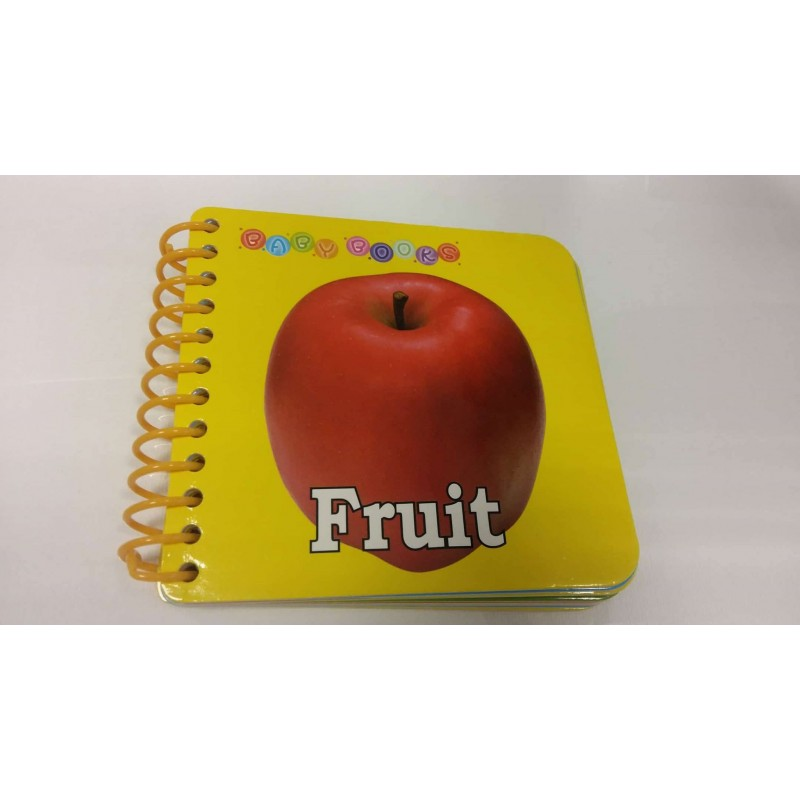
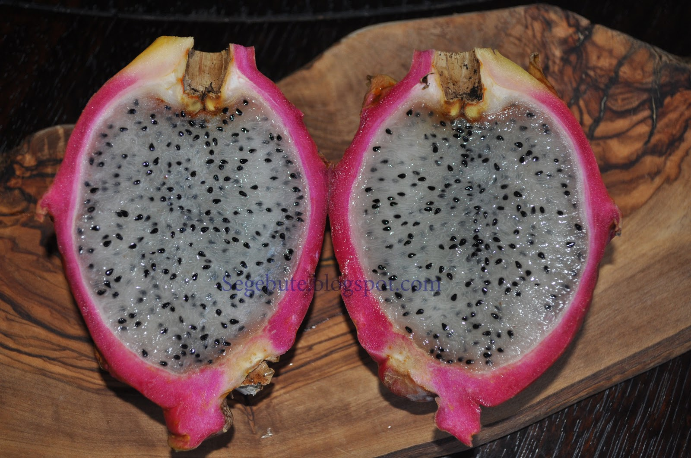

„Misija – švari vasara“ skaičiuoja darbo vaisius | Alkas.lt
2020.10.29 08:40

Naujienų srautas (RSS) Alkas feisbuke Pradžia Apie Alkas.lt Renginiai Skelbimai Žaidimai Radijas Nuorodos Reklama – dabar 30 % nuolaida! PAREMKITE ALKĄ Eiti prie turinio Naujienos Nuomonių ratas Kultūra Visuomenė Gamta ir žmogus Mokslas Vaizdai ir garsai Skaitiniai Saulės arkliukai Visi įrašai Seime bus aptarta Lietuvos miestų ir regionų plėtra K. Stoškus. Apie „Lietuvos Respublikos kultūros politikos pagrindų įstatymo“ projektą Dalintis |
„Misija – švari vasara“ skaičiuoja darbo vaisius ( 0 )
www.alkas.lt 2020 09 24 11:04„Misija – švari vasara“ skaičiuoja rezultatus | lrv.lt nuotr.
Vasaros pradžioje Valstybinė saugomų teritorijų tarnyba prisijungė prie pakuočių tvarkymo sumanymo „Misija – švari vasara“. Kadangi buvo pastebėta, jog paskelbus karantiną ir kelionių apribojimus į gražiausias Lietuvos vietas plūstelėjo lankytojai, kartu su jais padaugėjo ir paliekamų šiukšlių.
Misijos „Švari vasara“ metu saugomų teritorijų lankytojų centruose buvo galima gauti šiukšlių maišus, gamtos mylėtojai raginti susirinkti ne tik savo šiukšles, tačiau eidami pažintiniais takais, saugomų teritorijų maršrutais surinkti viską, ką ras pakeliui. Prie šio sumanymo jungėsi ir organizacija „Žaliasis taškas“ bei viešoji įstaiga „Kita forma“. Šiandien, skaičiuodamos rezultatus, organizacijos džiaugiasi ir taria ačiū visiems, padėjusiems Lietuvos gamtą padaryti švaresnę.
Šiukšles rinko 15 tūkst. saugomų teritorijų lankytojų
Saugomų teritorijų lankytojų centruose išdalinta apie 15 tūkstančių maišų šiukšlėms rinkti. Iš to galima spręsti, kad prie sumanymo prisijungė toks kiekis Lietuvos gamtos lankytojų.
Sumanyme iš viso dalyvavo 30 saugomų teritorijų lankytojų centrų, kiekviename iš jų per šį laikotrpį apsilankė nuo 7000 iki 10 0000 žmonių. Taigi bent dešimtadalis saugomų teritorijų lankytojų jų buvo sąmoningi, išsinešė savo šiukšles ir surinko svetimas.
Valstybinės saugomų teritorijų tarnybos atstovė Diana Rakauskaitė sako, jog šis sumanymas buvo gražus ir labai reikalingas, tai supratę saugomų teritorijų lankytojai noriai pasiimdavo šiukšlių maišus.
„Sąmoningi žmonės džiaugiasi natūralia, švaria gamta. Jie supranta, kad tai vabalų, paukščių, žvėrių namai. Jei nešiukšliname savo namuose, tai gal ir jiems nešiukšlinkime?“ – sakė D. Rakauskaitė.
Sumanymą „Švari vasara“ palaikė ir joje dalyvavo mokyklų bendruomenės, stovyklų dalyviai, moksleivių gamtosauginių būrelių nariai, saugomų teritorijų darbuotojai, bibliotekos. Iš viso gamtoje tvarkėsi apie 150 skirtingų organizacijų.
Moksleivių surinktas šiukšles skaičiuoja tonomis
Pakuočių tvarkymo organizacija „Žaliasis taškas“, kartu su „Kita forma“ bei Valstybine saugomų teritorijų tarnyba surengė dvi mažesnes ir tris stambesnes talkas (Labanoro girioje, Pajūrio ir Metelių regioniniuose parkuose). Per jas bendromis jėgomis surinkta apie 15 kubinių metrų atliekų, daugiausia – statybinių ir automobilių servisų atliekų.
Šių talkų metu iš viso sutvarkyti 7 didesni ar mažesni sąvartynai, taip pat iš pažintinių takų ar paplūdimio surinkta apie 50 kilogramų maisto pakuočių.
Vieną iš talkų pažintiniais takais vedęs Pajūrio regioninio parko ekologas Erlandas Paplauskis išsakė auksinę mintį: „Miškuose nėra apmokamų nuolatinių valytojų. Žmogus turi suprasti, kad tai, kas valstybės – ir jo paties turtas. O kiekvieną turtą juk reikia prižiūrėti,“ – po talkos sakė Pajūrio regioninio parko ekologas.
Siekiant, kad prie šio sumanymo prisijungtų kuo daugiau moksleivių, šiukšlių rinkimas gamtoje, saugomose teritorijose tapo visus metus vykstančios „Žaliosios olimpiados“ vasaros užduotimi. Ši užduotis kasmet būna vis kitokia.
Moksleiviai pasiraitojo rankoves ir jų rezultatai pribloškė užduoties sumanytojus. Per vasarą jie surinko:
4549 kilogramus (arba 4,5 tonos) plastiko atliekų; 557 kilogramus arba pusę tonos popieriaus atliekų; 1577 kilogramus (arba pusantros tonos) didelių gabaritų stiklo duženų; 1609 kilogramus statybinių atliekų; Arti pusės tonos padangų; 851 kilogramų autoservisų atliekų; 1 toną – įvarios tekstilės.
Įdomiausios gamtoje rastos atliekos buvo medicininės kaukės, vienkartinės pirštinės (karantino laikotarpio „palikimas“), sofa, televizorius, vaikiškas vežimėlis, mobilusis telefonas ir arbatinukas.
„Prisipažinsiu, „Misija – švari vasara“ pradėjome su šiokiu tokiu nerimu. Ar visuotinės sveikatos problemos neužgoš noro rūpintis aplinka? Ar mokslo metus baigę nuotoliniu būdu, moksleiviai tebenorės gyvų susitikimų? Ar pokyčių išvarginti mokytojai norės skatinti mokinius rūpintis aplinka net ir per atostogas? – prisiminė organizacijos „Žaliasis taškas“ atstovė Asta Burbaitė. – Atsakymus gavome labai greitai – jau birželio pradžioje stebėjome socialinių tinklų įrašų su grotažyme #misijasvarivasara ir sutvarkytų vietų nuotraukų srautą. Šiandien pamiškėse surinktų atliekų kiekį skaičiuojame tonomis ir sakome visiems prisidėjusiems – ačiū, jūs esate tikri gamtos didvyriai!“.
Parengta pagal žurnalistės Ingos Labutytės-Atkočaitienės straipsnį.
Reklama
Susiję straipsniai:
Miškuose nėra apmokamų valytojų Naujas sumanymas! Kiekvienas iš gamtos – po šiukšlę Vasarą – daugiau lankomų vietų saugomose teritorijose Aplinkosauginio požiūrio pagrindinė taisyklė – „ką atsinešei į gamtą, tą ir išsinešk“ (video) Sąjūdis „Už Lietuvos miškus“ piketu ragino Saugomų teritorijų tarnybą pradėti saugoti Naujai sutvarkytas gamtos paminklas – Pūčkorių atodanga „Darom“ Lietuvos saugomose teritorijose Saugomų teritorijų gaminio ženklą gauti bus lengviau Aukštadvario regioninis parkas kviečia į atsinaujinusį Lankytojų centrą Sutvarkytos saugomos teritorijos traukia lankytojus Aplinkos ministerijai pateiktas Punios šilo apsaugos tikslų projektas Naujame leidinyje – apie gamtos vertybes saugomose teritorijose „Adventur“ parodoje bus pasakojama apie bites saugomose teritorijose Bus tvarkomas Jiesios kraštovaizdžio draustinis Lankytojų centrai siūlo savarankiškai keliauti po gamtą Šiandien minime Pasaulinę aplinkos dieną Apie saugomas teritorijas – po vienu stogu Apdovanoti nacionalinio konkurso „Pamoka gamtoje: svajokime drauge!“ nugalėtojai Svarstytas valstybinių parkų ir rezervatų likimas Novaraisčio draustinis svetingai sutiks paukščius Nacionaliniams parkams – ketvirtis amžiaus Saugomoms teritorijoms skirtos ES investicijos Atnaujinimo darbai prie Vainežerio Prie Metelių ežero statomas apžvalgos bokštas Saugomose teritorijose likviduota šimtai apleistų pastatų Bus steigiamos naujos „Natura 2000“ teritorijos Kuršių nerijoje varžėsi Mažosios Lietuvos regiono moksleivių komandos Siūloma steigti naujas jūrines saugomas teritorijas Regioniniai parkai 25-metį švęs Lietuvos liaudies buities muziejuje Saugomas teritorijas galima bus apžvelgti iš aukščiau Kategorijos: Gamta ir ekologija , Gamta ir žmogus , Lietuvoje , Naujienos , Visi įrašai | Žymos: „Kita forma“ , „Misija: švari vasara!“ , „Švari vasara“ , „Žaliasis taškas“ , Asta Burbaitė , Diana Rakauskaitė , Erlandas Paplauskis , gamtos mylėtojai , Inga Labutytė-Atkočaitienė , Lietuvos gamta , pakuočių tvarkymas , paliekamos šiukšlės , saugomos teritorijos , šiukšlių rinkimas , Valstybinė saugomų teritorijų tarnyba . Seime bus aptarta Lietuvos miestų ir regionų plėtra K. Stoškus. Apie „Lietuvos Respublikos kultūros politikos pagrindų įstatymo“ projektą Skaityti komentarus Komentavimo taisyklėsParašykite komentarą Atšaukti atsakymą
Taip pat skaitykite:
Artėja metas keisti padangas Pasaulinėse astronomijos ir astrofizikos e. varžybose lietuviams – trys sidabro medaliai ir du pagyrimai R. Karbauskis siūlo didinti kultūros darbuotojų atlyginimus bei šios srities finansavimą Prezidentas tiki: Lietuva – stipri, teisinga, žalia ir atvira naujovėms gerovės valstybė Sporto ir kultūros renginiams – griežtesni ribojimai, įvesti žiūrovų ribojimai, kitiems renginiams – draudimai Konservatoriai siunčia žinią valdantiesiems: susilaikykite nuo savų įdarbinimo A. Grigaravičius. Neatmezgamas Vilniaus mazgas LLRA-KŠS dėl galimų Seimo rinkimų pažeidimų kreipėsi į Prezidentą ir Seimą „RTR Planeta“ laidos Lietuvoje gali būti sustabdytos Sostinė kovai su COVID-19 siūlo 130 papildomų lovų ir 100 tūkst. eurų savivaldybės lėšų Santariškių eismo žiede sraigtasparnis nusileido su itin svarbiu kroviniu – atskraidino donoro širdį ULAC gydytojai primena: kaip tinkamai dėvėti kaukę? COVID-19: nepaprastosios priemonės kelia „piktnaudžiavimo valdžia riziką“ Etikos sargų prašoma įvertinti Seimo nario J. Džiugelio reikalavimus išasfaltuoti jo kelią D. Norvilas: Gyvenimo kokybė už miesto yra nepalyginamai aukštesnė LMTA Balkono teatre – nemokami renginiai Veliuonoje surengtos pirmosios respublikinės Antano ir Jono Juškų varžytuvės Nidoje – konferencija Kuršių nerijos įtraukimo į UNESCO pasaulio paveldo sąrašą 20-mečiui paminėtiReklama
Pradžia Apie alkas.lt Renginiai Skelbimai Žaidimai Radijas Nuorodos Naujienos Lietuvoje Baltų žemėse Užsienyje Nuomonių ratas Lietuvos kelias Lietuvos kūrėjai Sekmadienio sakmė Akiračiai Lietuvos repolonizacijai – ne! Moksleivių mintys Kultūra Etninė kultūra Mes baltai Kalba Religija Istorija Kultūros paveldas Menas Architektūra Literatūra Kultūros politika Šventės Visuomenė Pilietinė visuomenė Politika ir ekonomika Švietimas Žmonės Užsienio lietuviai Žiniasklaida Laiškai Alkui Gamta ir žmogus Gamta ir ekologija Šventvietės Energetika Sveikata Psichologija Kelionės Kylam Įvairenybės Mokslas Mokslo naujienos Technika ir technologijos Astronomija ir kosmonautika Mokslo darbai Vaizdai ir garsai Garsai Vaizdai protui Vaizdai sielai Vaizdų aruodai Skaitiniai Žodžiai sielai Lituanistikos klasika Prieškario skaitiniai Dienoraščiai, įspūdžiai, apžvalgos Grožinė kūryba
Antklodės Baldai internetu Paskolos internetu Darbo skelbimai Apie Alkas.lt | Susisiekite su Alkas.lt | Alkas.lt Feisbuke | Orai © 2011 Alkas.lt - Visos teisės saugomos.
- SEGEBUTĖS UŽRAŠAI: Pitaja arba "Drakono vaisius"
- Sodo gėrybės - Sujunk 3 vaisius
- vaisius - Vikižodynas - Wiktionary
- Daržovės ir vaisiai - BARBORA
- Džiovinti vaisiai | Džiovintos uogos | Riešutai Jums
- Drakono vaisius arba Kertuotis – Tailando vaisius ...
- Egzotiniai vaisiai ir daržovės | MAXIMA | MAXIMA
- Durianas – Tailando vaisių karalius, smirdantis vaisius ...
- VAISIAUS ŽŪTIS
- vaisiai - išsamiai DELFI.lt
- SEGEBUTĖS UŽRAŠAI: Pitaja arba "Drakono vaisius"
„Misija – švari vasara“ skaičiuoja darbo vaisius . www.alkas.lt 2020 09 24 11:04 „Misija – švari vasara“ skaičiuoja rezultatus | lrv.lt nuotr. Vasaros pradžioje Valstybinė saugomų teritorijų tarnyba prisijungė prie pakuočių tvarkymo sumanymo „Misija – švari vasara“. Kadangi buvo pastebėta, jog paskelbus karantiną ...
- Sodo gėrybės - Sujunk 3 vaisius
Paspaudus vaisius turi būti labai minkštas, o žievė itin lengvai luptis. Jei sukate galvą, ką pagaminti iš avokado. Štai jums kelios idėjos. Vištienos salotos su mangais ir avokadais. Itin ...
- vaisius - Vikižodynas - Wiktionary
Geriausia apsaugoti džiovintus vaisius nuo tiesioginių saulės spindulių ir laikyti juos tamsioje vietoje. Jei šaldytuve nėra pakankamai vietos džiovintiems vaisiams laikyti, galite juos įdėti į viršutinę virtuvės stalčių lentyną, kur dažnai nežiūrite. Atkreipkite dėmesį, kad kambaryje neturėtų būti didelė drėgmė.
- Daržovės ir vaisiai - BARBORA
Durianas – Tailando vaisius, tajų kalba vadinamas Tu-Rian.Tai didžiulis vaisius, pasižymintis specifiniu kvapu, todėl tikrai pastebėsite ir užuosite durianus pardavinėjamus ne tik Bankoko gatvėse ar turguose, bet ir praktiškai visur Tailande.
- Džiovinti vaisiai | Džiovintos uogos | Riešutai Jums
Saldžiarūgščius vaisius saugojo piktos ir nuodingos širšės. Žiemos pradžia Lapkritis - rugsėjo anūkas, o spalio - sūnus. Jis dar ne žiema. Tai paskutinis rudens mėnuo. Piktų šalnų ir žvarbumo pradžia. Nematoma šalčio giltinė nuvirina pievas, laukus, paežeres. Nupurto spalio auksą beržynuose, užgesina raudonų klevų ...
- Drakono vaisius arba Kertuotis – Tailando vaisius ...
Deja, visas bergamotės gėris yra odelėje, pats vaisius yra rūgštus ir maistui nenaudojamas. Nedideli bergamočių medeliai dyglių auga Italijoje, Bergamo regione, žydi balandį smulkiais baltais ir salsvai kvepiančiais žiedais. Vaisiai panašūs į citrinas ir sveria apie 200 g. Jos prinoksta ir skinamos žiemą bei ankstyvą pavasarį ...
- Egzotiniai vaisiai ir daržovės | MAXIMA | MAXIMA
Kertuotis, geriau žinomas kaip drakono vaisius, tajų kalba vadinamas Gao Mung Gorn, yra vienas iš Tailando vaisių, kurių tiesiog būtina paragauti keliaujant į Tailandą. Drakono vaisius yra iš tikrųjų išskirtinai atrodantis vaisius ir savo pavadinimą yra gavęs būtent dėl išskirtinės išvaizdos.
- Durianas – Tailando vaisių karalius, smirdantis vaisius ...
Blenderyje sumaltas drakono vaisius tapo gličia tyre, kuri nepasižymėjo skoniu, bet suputojo ir priminė šampūną su juodais krisleliais. Teko tą tyrę stipriai skiesti ananasų ir apelsinų sultimis, kol skonis tapo patrauklus ir nesijautė glitumo, tačiau ir pitajos skonio visai nesijautė. Nepatariu pitajos naudoti gėrimams.
- VAISIAUS ŽŪTIS
Maisto ir kitų kasdienių prekių parduotuvė internete. Informuojame, kad šioje svetainėje yra naudojami slapukai (angl. cookies).
- vaisiai - išsamiai DELFI.lt
Džiovinti vaisiai ir uogos ne tik sveikas ir maistingas užkandis praalkus, bet ir puikus įvairių maisto patiekalų pagardas, kurį įsigysite už puikią kainą! Įsigykite jau pamėgtų džiovintų vaisių ir uogų bei atraskite naujus skonius.
„Misija – švari vasara“ skaičiuoja darbo vaisius . www.alkas.lt 2020 09 24 11:04 „Misija – švari vasara“ skaičiuoja rezultatus | lrv.lt nuotr. Vasaros pradžioje Valstybinė saugomų teritorijų tarnyba prisijungė prie pakuočių tvarkymo sumanymo „Misija – švari vasara“. Kadangi buvo pastebėta, jog paskelbus karantiną ...
Paspaudus vaisius turi būti labai minkštas, o žievė itin lengvai luptis. Jei sukate galvą, ką pagaminti iš avokado. Štai jums kelios idėjos. Vištienos salotos su mangais ir avokadais. Itin ...
Geriausia apsaugoti džiovintus vaisius nuo tiesioginių saulės spindulių ir laikyti juos tamsioje vietoje. Jei šaldytuve nėra pakankamai vietos džiovintiems vaisiams laikyti, galite juos įdėti į viršutinę virtuvės stalčių lentyną, kur dažnai nežiūrite. Atkreipkite dėmesį, kad kambaryje neturėtų būti didelė drėgmė.
Durianas – Tailando vaisius, tajų kalba vadinamas Tu-Rian.Tai didžiulis vaisius, pasižymintis specifiniu kvapu, todėl tikrai pastebėsite ir užuosite durianus pardavinėjamus ne tik Bankoko gatvėse ar turguose, bet ir praktiškai visur Tailande.
Saldžiarūgščius vaisius saugojo piktos ir nuodingos širšės. Žiemos pradžia Lapkritis - rugsėjo anūkas, o spalio - sūnus. Jis dar ne žiema. Tai paskutinis rudens mėnuo. Piktų šalnų ir žvarbumo pradžia. Nematoma šalčio giltinė nuvirina pievas, laukus, paežeres. Nupurto spalio auksą beržynuose, užgesina raudonų klevų ...
Deja, visas bergamotės gėris yra odelėje, pats vaisius yra rūgštus ir maistui nenaudojamas. Nedideli bergamočių medeliai dyglių auga Italijoje, Bergamo regione, žydi balandį smulkiais baltais ir salsvai kvepiančiais žiedais. Vaisiai panašūs į citrinas ir sveria apie 200 g. Jos prinoksta ir skinamos žiemą bei ankstyvą pavasarį ...
Kertuotis, geriau žinomas kaip drakono vaisius, tajų kalba vadinamas Gao Mung Gorn, yra vienas iš Tailando vaisių, kurių tiesiog būtina paragauti keliaujant į Tailandą. Drakono vaisius yra iš tikrųjų išskirtinai atrodantis vaisius ir savo pavadinimą yra gavęs būtent dėl išskirtinės išvaizdos.
Blenderyje sumaltas drakono vaisius tapo gličia tyre, kuri nepasižymėjo skoniu, bet suputojo ir priminė šampūną su juodais krisleliais. Teko tą tyrę stipriai skiesti ananasų ir apelsinų sultimis, kol skonis tapo patrauklus ir nesijautė glitumo, tačiau ir pitajos skonio visai nesijautė. Nepatariu pitajos naudoti gėrimams.
Maisto ir kitų kasdienių prekių parduotuvė internete. Informuojame, kad šioje svetainėje yra naudojami slapukai (angl. cookies).
Džiovinti vaisiai ir uogos ne tik sveikas ir maistingas užkandis praalkus, bet ir puikus įvairių maisto patiekalų pagardas, kurį įsigysite už puikią kainą! Įsigykite jau pamėgtų džiovintų vaisių ir uogų bei atraskite naujus skonius.
 